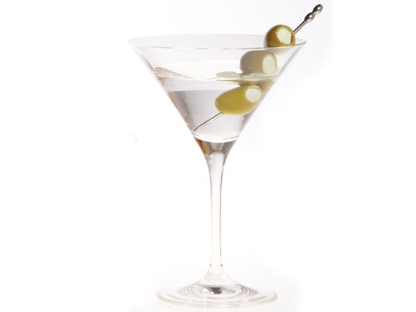

How to Make a Martini

Description
A simple cocktail as old as time, this tutorial will amaze your houseguests with your deft bartending skill.
Ingredients and Tools
- Martini Glass
- Cocktail Shaker
- Strainer
- Ice
- Dry Vermouth
- Vodka or Gin
- Cocktail Skewers
- Olives
Steps
- Pour 0.5 oz of dry vermouth into your martini glass. Swirl the vermouth so that it touches most parts of the glass, then dump out the vermouth.
- Pour 2 oz of vodka or gin into your cocktail strainer.
- Fill the shaker up halfway with ice, put the top on and shake vigorously for 7-8 seconds.
- Take the top off the shaker, place the cocktail strainer on top of the shaker and strain the cocktail into the martini glass.
- Garnish with two olives on a skewer. Enjoy!